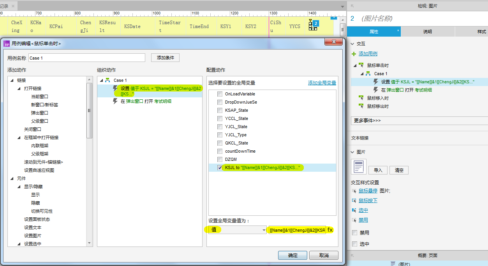
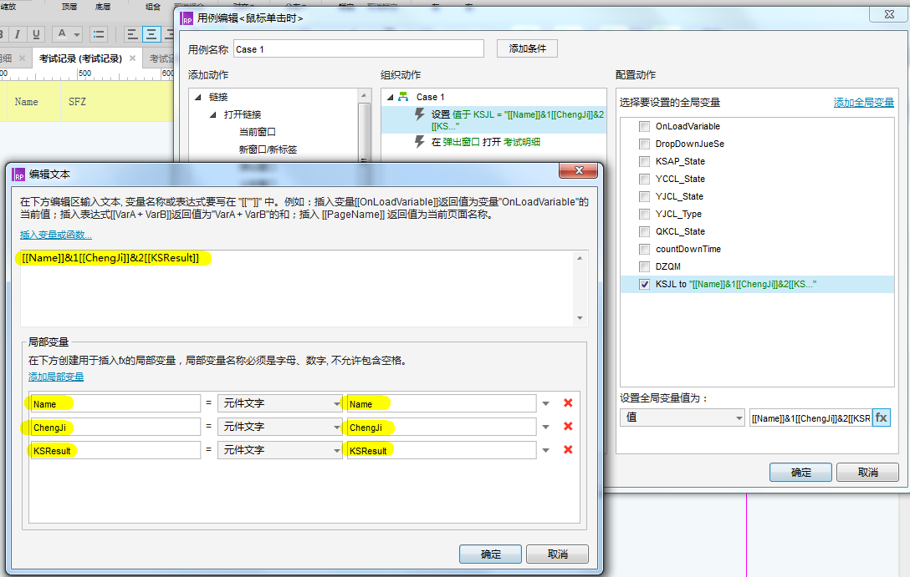
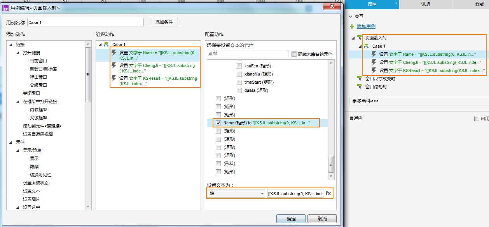
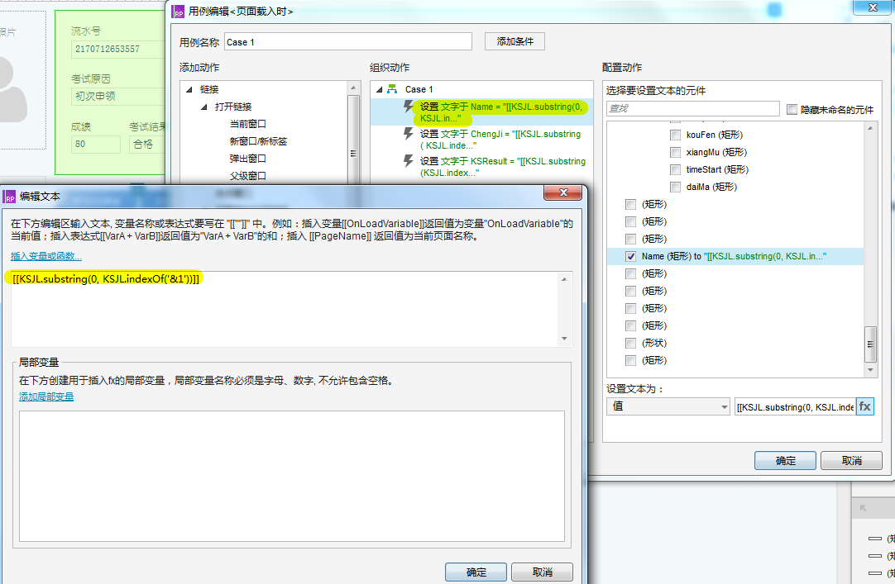
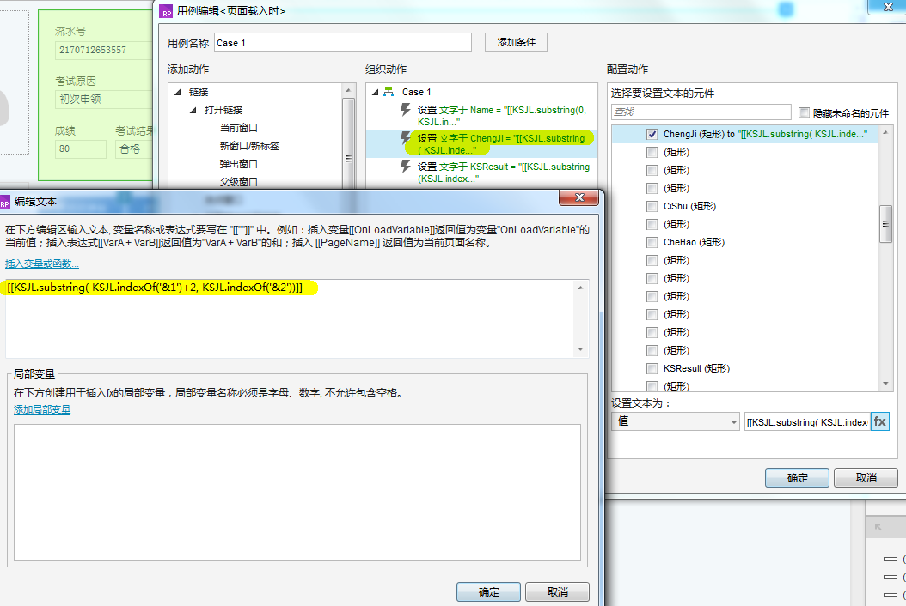
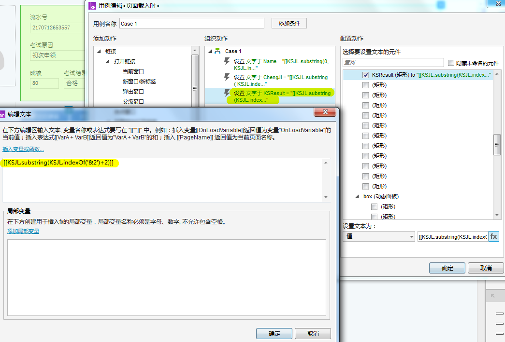

多值单变量的页面传值
axure建议全局变量不要超过25个（如果在IE浏览器中浏览原型），但是我们在做原型时，经常需要实现在两个页面之间传递多值，这样的话25个全局变量根本不够用，所以这就涉及了如何用一个变量在两个页面之间传递多个值的问题，下面就讲实现方法。
为全局变量 KSJL 赋多值
- 将三个元件 Name ChengJi KSResult 的元件文字分别赋给了三个局部变量 Name ChengJi KSResult
- 将三个局部变量 Name ChengJi KSResult 通过 '& + 数字' 形式的连接符连接成了一个字符串
- 将此字符串赋给了全局变量 KSJL


拆分全局变量 KSJL 并获取相应的值
通过 substring() 和 indexOf() 两种方法可以获取到全局变量 KSJL 相应的值，实现方法请看下图
- 获取 Name
- [[KSJL.substring(0, KSJL.indexOf('&1'))]]
- 获取 ChengJi
- [[KSJL.substring( KSJL.indexOf('&1')+2, KSJL.indexOf('&2'))]]
- 获取 KSResult
- [[KSJL.substring(KSJL.indexOf('&2')+2)]]



